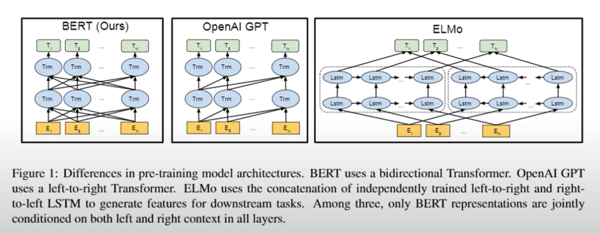

Welcome back to the series, and if you have not checked our previous blogs you must otherwise it will be a little harder to follow up ( check these out 🔖 and 🔖). I know that I promised that we will be discussing more transformers, but I think it is time to discuss something new with some hands-on. We will be revisiting transformers in-depth with practical sessions soon.
In this blog, we will be looking into another breakthrough of Natural Language Processing research BERT.
The BERT stands for Bidirectional Encoder Representations from Transformers. The main idea that this paper position is that it is already a pre-trained model on a large dataset. Hence, we need a small training required for running any kind of NLP tasks.
In this paper, they are comparing three classic Transformer models with BERT, OpenAI GPT and ELMo.
GPT only take care of the tokens that are left to the current token. ELMo is a substitute for the word vectors. Each word will be associate with a fixed-length vector in the word space. ELMo uses two LSTMs (one forward and one backward) for creating the hidden states and concatenate the final result for the embedding, and essentially at the end of the training what you get out of it will be a more accurate representation of the word, because each word may have a different meaning or context depending upon the surrounding words to it. Essentially, the word vectors that are being generated are specific for sentence. The issue with this model is that both of the LSTMs are independent of each other and hence the effectiveness of the information being generated will be less. But BERT addressed this issue. Each transformer, look into all other tokens and then create the hidden states. The reason for GPT is more focused on the language models that is why it focused on the left part of the tokens. However, BERT can do the same task as it considers both directions but it is not super clear till now. That is being said, it is pretty good at everything else 🤪.
Training of BERT
For the training, they introduced a new concept called the masked language model ( MLM ). During the training, some of the words in the input will be masked (replaced by [MASK]) and the model will be predicting what is in the right place. As we mentioned earlier this is a bidirectional model hence it will be considering words from both sides to predict what is the masked word.
And the second part of the model is NSP( Next sentence prediction) where we consider to sentences, both of them separated by [SEP] and the label of this task is “Is Next” which mean this will predict whether this particular sentence is the logical continuation of the sentence of not. And the training is a very big process, mean on a lot of data and in this architecture it has 24 transformer layers. This trained model will be the underlying one and we will be pretraining our tasks on top of this.
While looking into the input representation of BERT we can see the input embedding are the sum of token embeddings, position embedding and segment embedding.
When we do the embedding we will be looking into the dictionary where we have a vector corresponding to each word in it. Normally, those are arranged in the way that the most common words are on the top of the list. When we look into some words that are not present in the dictionary, then the general method is that we will be assigning it to the OOV ( out of vocabulary ) vector. There are other methods, is an analysis using a character level analysis. But this is not a good approach because the character level analysis most of the time will not make sense. The most effective method to address both issues in the previous cases is that look into a sub words level. This approach is used in the BERT, in the given image about the word Playing is subdivided into subwords Play and ##ing. This kind of representation helps to include more information in vectors rather than storing a single vector for Playing.
Evaluation of BERT
Now we have a model which works pretty well for Make word prediction and next sentence prediction. Then comes the question of how to evaluate them. Here in the paper, they evaluated the model on many tasks. For example, MNLI ( Multi-genre Natural Language Inference) is a large scale crowdsourced entailment classification task. Given a pair of sentences, the goal is to predict whether the second sentence is an entailment, contradiction, or neutral with respect to the first one. In order to do the task, they input the data into the BERT model and then get the corresponding token that, As we mentioned earlier the first token represents the beginning of the sentence right, they modify the class label and then fine-tune the model based on that ( a simple logistic regression can work on that, sound confusing? Don’t worry we will look into this later with implementation).
A little bit more about BERT
Learning Language Representation: The meaning of the word is captured in the vectors(or embedding). Let us consider this question, How to build a general pre-trained language representation model. Because if we have one general model that can be adapted to various NLP tasks easily, we don’t have to retrain a model from scratch every time.
But How?
BERT is nothing but a Bidirectional Transformer and Transformer is a breakthrough of having long term dependencies between words using self-attention. The performance of the NLP tasks are by fine-tuned BERT is the current state of the art of most tasks.
Just a little flashback on what is self-attention, when we learn a sentence or encode a particular word in the sentence it will get attention weights from all other words in the same sentence which will be indicated for that particular word what all are the other words the model should give attention to. There will be multiple layers and weights like this and each will be incorporating different property like grammatical dependency, lexical dependency and so on.
There are mainly 3 types of attention, encoder-decoder attention, encoder self-attention, and decoder-self attention
The important point here to note is that in both encoder-decoder and decoder self-attention you can have attention from the previous words ( one direction )
Let us look into some complex architecture of the transformer
Fix your focus on the encoder part, we are sending two words( tokens) simultaneously to the model and the self-attention here we see is a bidirectional one. The add normalise connection helps the models to learn. Each token has a feed-forward layer and followed by the normalisation. At the end of the encoder, the result will pass to the encoder-decoder attention module. Before that, the decoder module has a self-attention module with ( one-directional attention)
Bidirectionality
Although most NLP tasks are typically left-to-right or right-to-left, in order to capture the context of the word we have to incorporate both directions.
So from the image, it is pretty clear that we have to consider both directions to have a better context, but how do we do that?
One approach was to create two independent models for the left to right and right to left then concatenate them together ( this was the idea behind ELMo) but we could say that they are shallowly bidirectional.
BERT is a naturally bidirectional model ( in the encoder self-attention part). As we previously mentioned transformers helps the models to understand the context and teaches all another word to look into while predicting another.
BERT Models
There are BERT cased and uncased where they differentiated the upper case and lower case and the parameter is also different so the hidden layers
How to train them?
Since we understood that it is a little bit complex model the normal training processes won’t work here because the word would learn from itself multiple times due to the multiple layers of connections, thus the solution is two unsupervised tasks hence there are fewer chances of learning the same thing multiple times
Confused? 😥 Let us try to understand it better
The first task is the Masked language model and the next Next sentence prediction which we discussed earlier both of these tasks together helps the BERT to learn the relationship of the words.
Then they train on a large corpus using multiple TPUs by multiple days. The interesting part is the Fine-tuning where we can tune inexpensively for many NLP task
BERT used for Question answer systems are quite interesting, let us look into the little detail
SQuAD - Stanford question answering dataset, is the benchmark dataset for all question answering system. Unlike google assistant or Alexa, it is not we ask any generic question and the model will reply. It is more like retrieving a span of text from the given context paragraph. Which means the final answer should be part of the text we are given. The model’s task is to understand the question thoroughly and then point where the correct answer is.
Refer to this link to have an interaction with the dataset and it is quite interesting 🔖
In the given image we can see how the BERT modified for the given task. Here the inputs are the question and the context paragraph. There are few other tokens like CLS and SEP to understand the starting and the separation between the question and the paragraph. The final model will be predicting the start of the answer and the end of the paragraph. Essentially what we have to do is to train a layer on top of that( train the very last layer).
For more understanding please refer to the colab attached 🔖. I wish I could record, me explaining through the code base but it is self-explanatory you will be fine. Also, don’t worry it is not the end we will be learning a lot more together and then we will demystify all of our doubts one by one
As an endnote